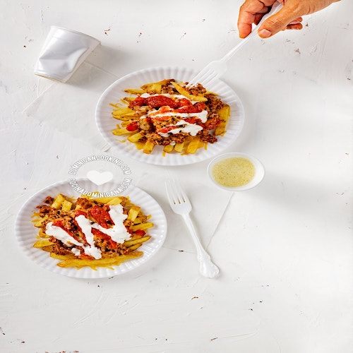

Yaroa Mixta Recipe
<--- Go Back To Recipes

Description
Yaroa is a Dominican dish that consists of a layer of boiled and mashed
ripe plantains -- or French fries -- topped with shredded or minced meat,
cheese, and drizzled with mayo and ketchup [1]. Yaroa is a dish that was
created and made popular in Santiago by street food vendors (carritos).
There are two type of yaroas: yaroa de plátano maduro (yellow or ripe
plantain yaroa) and yaroa de papa frita (French fries yaroa). We'll be
making the potato fries version.
Ingredients
For potato fries
- 24 oz potatoes, , peeled and cut into sticks [680 g]
- 4 tablespoon olive oil
- 3/4 tablespoon salt
- 1 teaspoon pepper (freshly-cracked, or ground)
- 1 tablespoon garlic powder
Meat
- 2 tablespoon olive oil, [20g]
- 1 red onion, (medium-size, minced [65 g]
- 3 cloves garlic, [20g]
- 1 pound minced beef, [454g]
- 1 cup tomato sauce, [115g]
- 1 bell pepper, (diced [76g]
- 1 1/2 teaspoon salt, (or more, to taste), divided
- 1/2 teaspoon pepper (freshly-cracked, or ground)
- 1 sprig cilantro, (chopped)
- ½ cup diced fritos maduros, (optional)
Toppings
- 1 cup shredded mozzarella
- 1 cup shredded cheddar
- 1/3 cup ketchup
- 1/4 cup mayonnaise
Instructions
Fries:
-
Seasoning the fries: Drizzle the potato or celeriac
with the olive oil, and add the remaining salt, as well as the
pepper, and garlic powder. Toss to coat them all in the oil and
seasoning.
-
Cooking the fries: Place on a baking sheet and cook
in preheated oven to 350 ºF [175 ºC] for 25 minutes, or until they
turn a light golden color and are crispy around the edges. If you
want to make them in the air fryer, use the temperature and time
suggested by the manufacturer.
Meat:
-
Cook meat: Heat oil over medium-low heat. Stir in
onion and cook and stir until it turns translucent. Add garlic and
cook stirring for a minute. Add minced meat and cook and stir,
breaking into small clumps until it browns.
-
Season: Pour in tomato sauce, add bell pepper,
salt, and pepper. Stir and cover. Simmer for 3 minutes.
-
Add extra ingredient: Uncover and mix in the
optional ingredient of your choice, or none at all if you so prefer.
Taste and season with salt and pepper to taste if needed. Remove
from the heat.
Assemble it:
-
Serving: Layer the fries onto 4 microwave-safe
plates. Top with the steaming-hot meat. Sprinkle with mozzarella and
cheddar. The hot meat should melt the cheese, but if it doesn't,
heat the plates in the microwave for 90 seconds, or until the cheese
melts. Drizzle with mayo and ketchup and serve right away.
<--- Go Back To Recipes